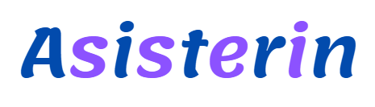

<ion-header>
  <ion-toolbar>
    <ion-title class="centro" ></ion-title>
     
  </ion-toolbar>
</ion-header>

<ion-content class="background" padding>

  <!-- botoenes superiores (perfil, log out, configuracion) -->
  <ion-grid class="btncenter">
    <ion-row>
      <ion-col>
        <ion-button [routerLink]="'/prof'" color="tertiary" >
          <ion-icon slot="icon-only" name="cog-outline"></ion-icon>
        </ion-button>
      </ion-col>
      <ion-col>
        <ion-button [routerLink]="['/perfil']">
          <ion-icon slot="icon-only" name="person-circle-outline" ></ion-icon>
        </ion-button>
      </ion-col>
      <ion-col>
        <ion-button color="tertiary" [routerLink]="['/inicio']">
          <ion-icon slot="icon-only" name="log-out-outline"></ion-icon>
        </ion-button>
      </ion-col>
    </ion-row>
  </ion-grid>
  

<ion-container id="centrar">
 

  
  <ion-button  class="top-20" size="default" expand="full" color="tertiary" [routerLink]="['/escaner']" > <ion-icon name="qr-code-outline"></ion-icon> Escanear QR</ion-button>
  
 <ion-button  class="top-20" size="default" expand="full" color="primary" [routerLink]="['/asistencia-al']" > <ion-icon name="today-outline"></ion-icon> Asistencias</ion-button>

  <ion-button  class="top-20" size="default" expand="full" color="tertiary" [routerLink]="['/justificaciones']" > <ion-icon name="reader-outline"></ion-icon> Justificaciones </ion-button>
 <ion-button  class="top-20" size="default" expand="full" color="primary" [routerLink]="['/ticket']" > <ion-icon name="reader-outline"></ion-icon> Abrir Ticket</ion-button>


</ion-container> 

</ion-content>
